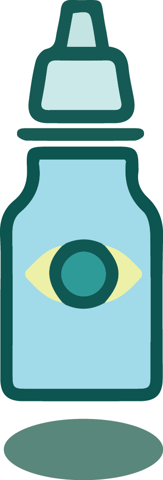
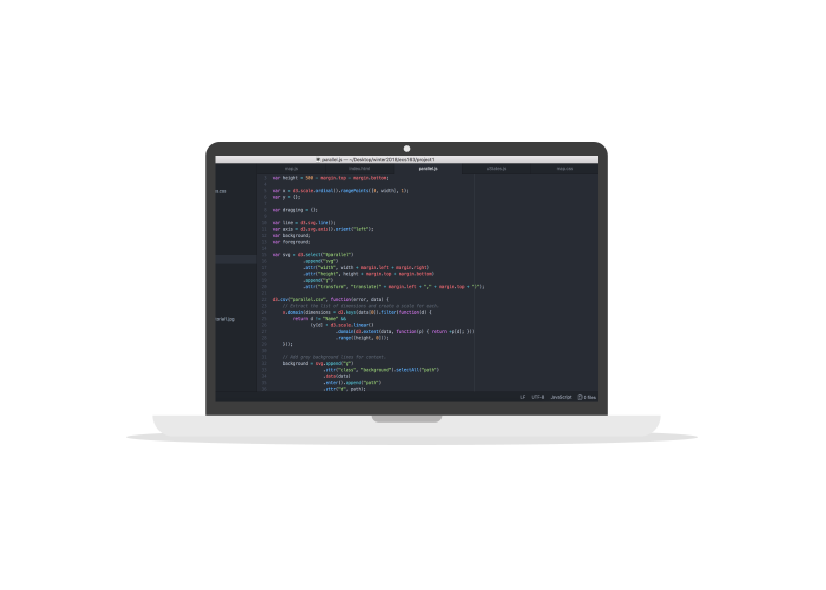

×
Explore Sandra's bag. Peep inside and take a look on whatever interests you!
×

I wear contacts lenses and unfortunately to my astigmatism my eyes get pretty dried randomly. So I always carry them in my backpack or anywhere I go to keep them moist and happy!
×
I love stationary. If there’s something I love to collect it’s my stationary. I hold all of my essentials in my pencil bag that I’ve had for several years. I use these pens, pencils, highlighters to read books, academic journals, or solve problems. But they’re also used to doodle away when I’m in lecture too (❁´▽`❁)*✲ﾟ*
×

If you ever bump into me on campus or anywhere in general, chances are I’m with my laptop. Generally I’m always on computer coding something away whether it’s for homework, work, or for fun. Otherwise, I’m like anybody else who loves to spend my time watching funny, useless videos or watching my favorite shows on Netflix.